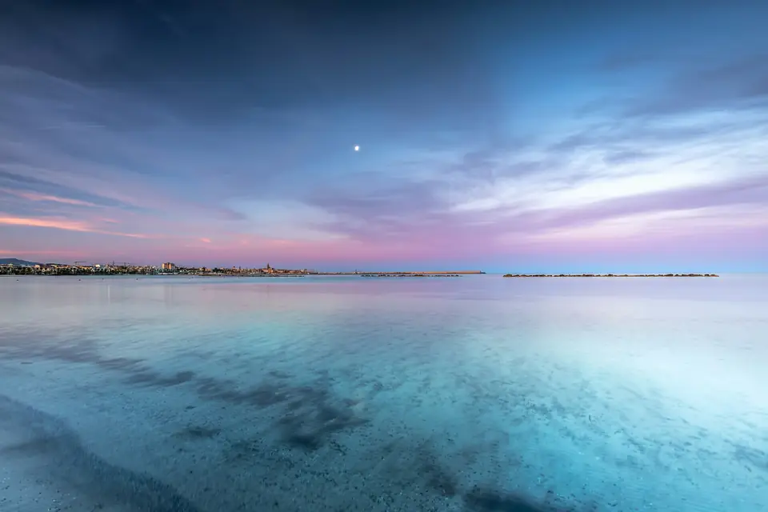
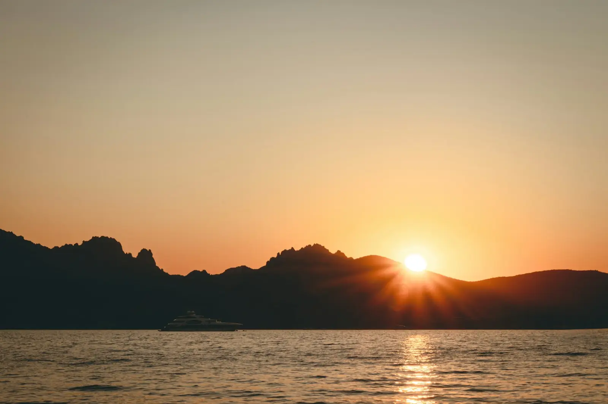
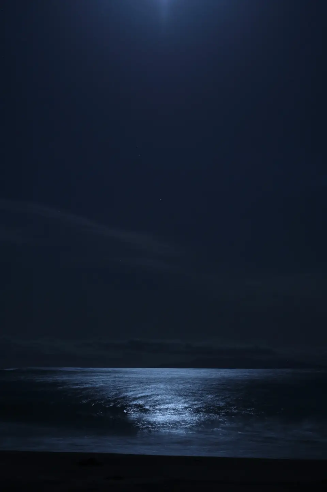

ore 5:52 · il mare è ancora rosa
Svegliarsi quando il mare ha ancora i colori dell'alba.
Bed & breakfast in Sardegna, con tre camere a pochi minuti dalla spiaggia. La colazione si fa in terrazza.
Controlla le date
Scorri: qui la giornata dura una pagina ↓
07:40colazione
Alle 7:40 profuma di pane.
Ogni mattina, sul tavolo della terrazza: pane del forno del paese, ricotta, miele, marmellate, frutta di stagione e caffè.
- Si serve fino alle 10.
- Intolleranze? Dillo la sera prima.
- Parti presto? Il cestino è pronto.
10:30la casa
Tre camere. Una terrazza. Nessuna fretta.
Check-in dalle 15 alle 20. Arrivi prima? Lasci le valigie e ti offriamo un caffè.
12:30le camere
Dove dormi.


15:30dintorni
Il pomeriggio è tuo.
Una cala per il bagno, un nuraghe, un borgo sul mare. Sulla mappa disegnata a mano trovi tutto, con i minuti di esempio.
Apri la mappa
18:45tramonto
Alle 18:45 si sale in terrazza.
Porta una maglia: dopo il tramonto il vento gira.

22:00, la luna sul mareResta anche stanotte.
Ostro è il vento di mezzogiorno. Ha dato il nome alla casa.